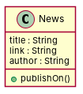

← all cases
D2/News — model qwen, condition B, run 1
1. Requirements (input)
R1: News have titles and links
R2: a newspaper is written in a language
R3: A class named "News", containing an attribute called "author", of type "String".
R4: A category has a value
R5: News have dates. Each date contains the day of the week, the month, the hours and the seconds
R6: A newspaper is published on a specific date
R7: A newspaper reports many news
R8: A news is published on a specific date
R9: News are related to one Newspaper and a newspaper can only include one instance of news.
2. Result 1 → Result 2 (ambiguity removal)
Red, struck-through: removed by ambiguity removal; green: added.
| classes (3 → 1) |
|---|
| Date |
| News |
| Newspaper |
| attributes (7 → 3) |
|---|
| Date.day |
| Date.hour |
| Date.month |
| Date.second |
| News.author |
| News.link |
| News.title |
| relations (2 → 0) |
|---|
| association: News -> Newspaper |
| has: News -> Date |
3. Ambiguity tags
| id | req | type | cue | status | readings / explanation |
|---|
| A1 | R2 | referential | passive 'written' without agent | resolved | written by a journalist; written in a language
The phrase 'a newspaper is written in a language' is ambiguous, as it could refer to the language of the newspaper or the act of writing by a journalist. |
| A2 | R6 | referential | passive 'published' without agent | resolved | published by a publisher; published on a specific date
The phrase 'A newspaper is published on a specific date' is ambiguous, as it could refer to the date of publication or the act of publishing by a publisher. |
| A3 | R7 | quantifier | many | resolved | reports a few news; reports many news
The phrase 'A newspaper reports many news' is ambiguous, as it could refer to a few or many news items being reported. |
| A4 | R8 | referential | passive 'published' without agent | resolved | published by a publisher; published on a specific date
The phrase 'A news is published on a specific date' is ambiguous, as it could refer to the date of publication or the act of publishing by a publisher. |
4. Diagrams generated from the shared model
usecase diagram
class diagram
5. Code skeleton (Python; Java in code/java/)
"""Code skeleton generated from the shared model of D2/News.
Every class and method records the requirement(s) it traces to."""
from __future__ import annotations
import dataclasses as _dc
import enum as _enum
import typing as _t
@_dc.dataclass
class News:
"""Source: R1"""
title: _t.Optional[str] = None
link: _t.Optional[str] = None
author: _t.Optional[str] = None
def publishOn(self) -> None:
"""Operation."""
raise NotImplementedError
6. Validation, checks and traceability
| python_compiles | True |
|---|
| java_compiles | True |
|---|
| attribute_mismatches | 0 |
|---|
| method_mismatches | 0 |
|---|
| use_cases | 0 |
|---|
| use_cases_without_actor | 0 |
|---|
| use_cases_without_method | 0 |
|---|
| actors_without_use_case | 0 |
|---|
| relations_to_unknown_class | 0 |
|---|
| inconsistencies | 0 |
|---|
| inconsistency_rate | 0.0 |
|---|
| requirement_coverage | 0.1111 |
|---|
| validator fixes | |
|---|
| assumptions for open ambiguities | [] |
|---|
7. Scores against the reference
| element | P | R | F1 | TP/FP/FN |
|---|
| classes | 1.0 | 0.167 | 0.286 | 1/0/5 |
| attributes | 0.333 | 0.067 | 0.111 | 1/2/14 |
| relations | 0.0 | 0.0 | 0.0 | 0/0/7 |
| relations_strict | 0.0 | 0.0 | 0.0 | 0/0/7 |